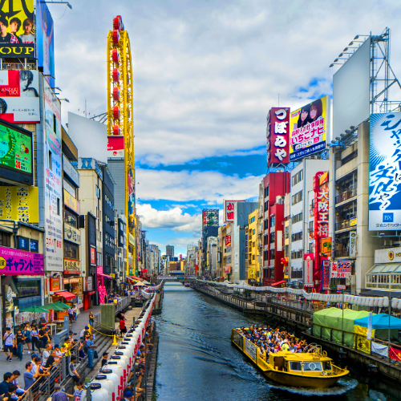

Dotonbori – Osaka's Iconic Entertainment District

Dotonbori (道頓堀) is one of Osaka’s most famous entertainment districts, known for its dazzling neon lights, lively atmosphere, and delicious street food. Located along the Dotonbori Canal, this bustling area is the heart of Osaka’s nightlife and is a must-visit for anyone wanting to experience the energy and excitement of the city.
What to Expect
- 🌸 Explore the neon-lit streets and iconic landmarks like the Glico Man Sign and Kani Doraku crab.
- 🌸 Savor Osaka’s delicious street food, including takoyaki and okonomiyaki.
- 🌸 Experience the vibrant nightlife and bustling atmosphere along the Dotonbori Canal.
- 🌸 Take photos at the best spots in the district, especially the illuminated Dotonbori Canal at night.
How to Get to Dotonbori
- 🌸 From Osaka Station: Take the Osaka Metro Midosuji Line to Namba Station (about 5 minutes). Dotonbori is a 5-minute walk from the station.
- 🌸 Direct access from Namba Station to the heart of Dotonbori.
- 🌸 Opening hours: Dotonbori is open year-round, with shops and eateries open late into the night.
- 🌸 Best photo spots: Glico Man Sign, Kani Doraku crab, and the Dotonbori Canal at night.
Why Dotonbori is a Must-Visit in Osaka
Dotonbori is the perfect place to experience the true spirit of Osaka—vibrant, lively, and full of energy. Whether you're exploring the neon-lit streets, tasting delicious street food, or soaking in the lively atmosphere, Dotonbori offers an unforgettable Osaka experience.
Tags: Dotonbori, Osaka entertainment district, Osaka street food, neon lights Osaka, Osaka landmarks, Japan nightlife.
Planning to visit Dotonbori?
To get the most immersive and insightful experience, we recommend booking a certified local private guide from our team. All our guides are licensed professionals officially recognized by the Japanese government, offering personalized tours tailored to your interests. Please contact your selected guide in advance to confirm availability and get expert assistance for your trip.